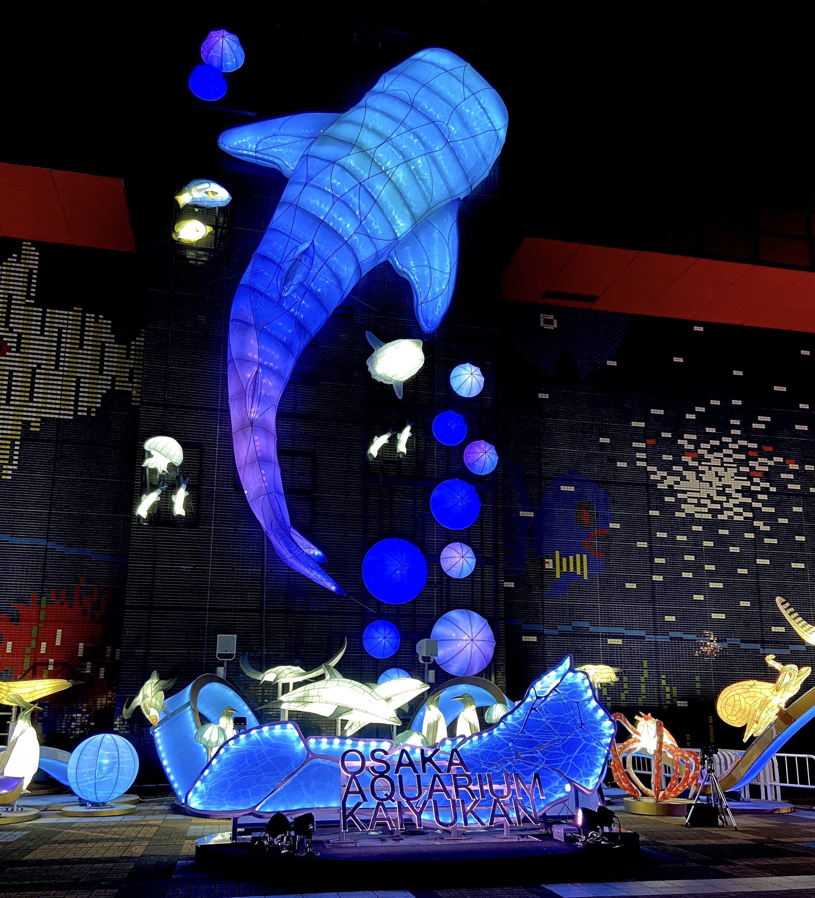
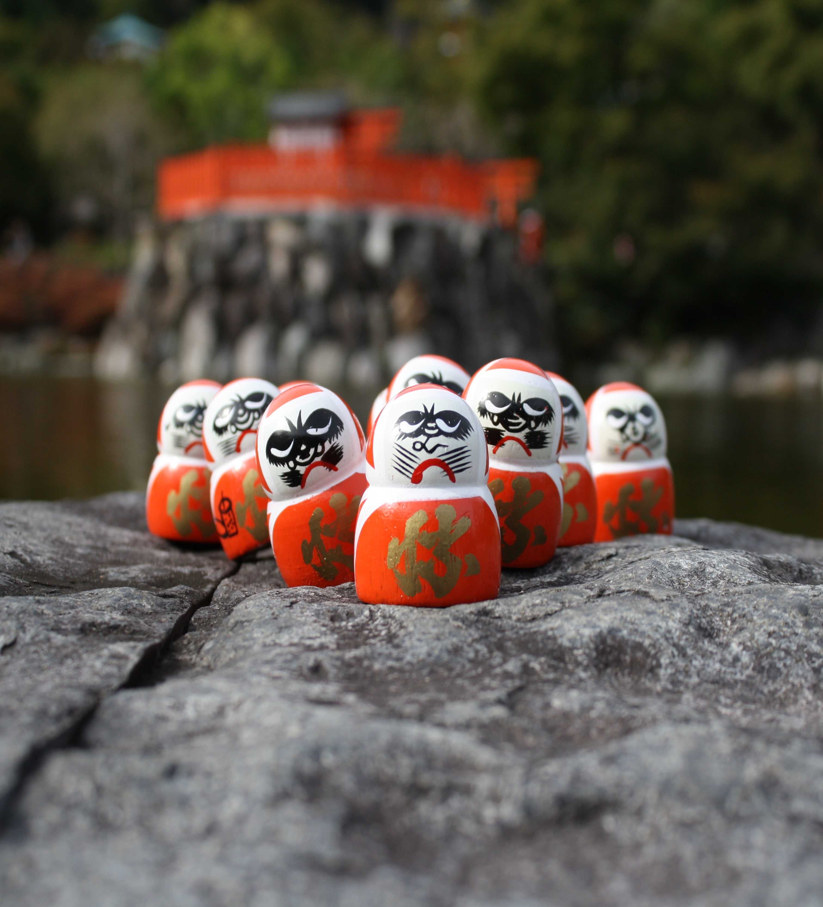
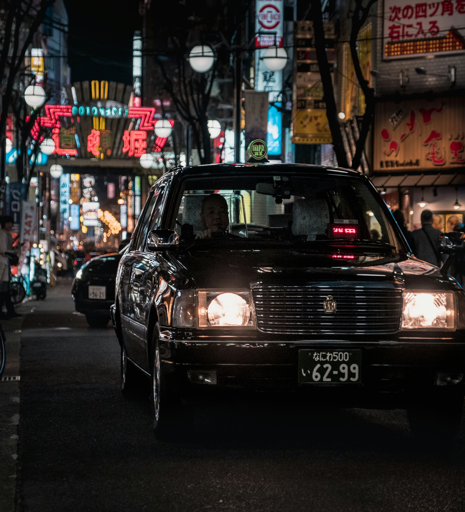

Why Japan?
Japan is the land of the rising sun
Japan is a country that seamlessly blends ancient traditions with cutting-edge technology, making it a captivating destination for travelers. From the bustling streets of Tokyo to the serene temples of Kyoto, Japan offers a unique and unforgettable experience. The country's rich culture, stunning landscapes, and warm hospitality make it a must-visit destination for anyone seeking adventure and discovery.
Whether you're interested in exploring vibrant cities, immersing yourself in traditional culture, or enjoying the breathtaking natural beauty, Japan has something for everyone. From the iconic cherry blossoms in spring to the vibrant autumn foliage, Japan's seasons offer a stunning backdrop for your travels. With its unique blend of old and new, Japan promises an unforgettable journey filled with wonder and discovery.
Places
My favourite places in Japan

Osaka Aquarium Kaiyukan
One of the largest aquariums in the world, featuring a wide variety of marine life.
Address
1 Chome-1-10 Kaigandori, Minato Ward, Osaka, 552-0022, Japan
What I like about it
I could live in this place. As you can visit at night it was so calm and quiet. Watching the whale sharks swim by was a surreal experience. The aquarium is so big and there is so much to see even collect all the cute stamps for your book!

Hōrinji Temple
A serene Buddhist temple located in the mountains of Kyoto, known for its beautiful gardens and peaceful atmosphere.
Address
457 Yukuecho, Kamigyo Ward, Kyoto, 602-8366, Japan
What I like about it
Such a surreal experience. The temple and its gardens are covered with duruma dolls, which were fun to spot and made for such incredible photos. The temple is located in the mountains so it was so peaceful and quiet, it felt like we were the only ones there.

Dotonbori district
A lively entertainment district in Osaka, famous for its vibrant nightlife, delicious street food, and iconic neon signs.
Address
1 Chome-9 Dotonbori, Chuo Ward, Osaka, 542-0071, Japan
What I like about it
Absolutely loved all the neon signs, the takoyaki was the main reason to get me there but the food was so good and there was so much to choose from. It was so lively and fun, I could have stayed there all night. Oh and don't forget the shopping at Don Quijote!